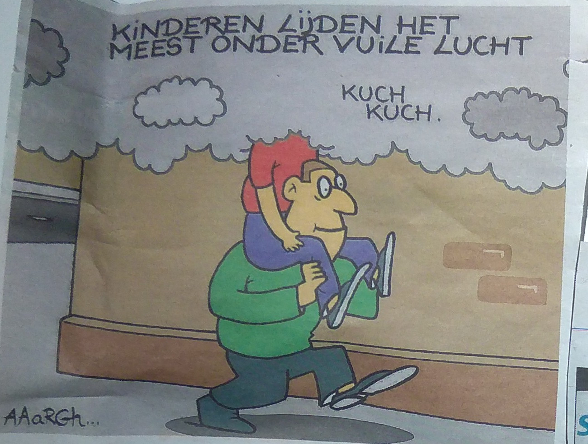

Portfolio Nederlands 2018-2019
Erik Mikuš
versie 1.2
Licentie:

Lettertype: xkcd, gedownload van ipythons GitHub en bewerkt met FontForge. Indien dit lettertype de leesbaarheid belemmert kan het verwijderd worden in de map assets: daar zouden de bestanden xkcd.tff, xkcd.woff en xkcd.woff2 moeten staan. Verwijder die bestanden om het standaardlettertype te gebruiken.
(klik op eender welke afbeelding voor een vergrote versie)
Hierin zouden veel te veel video's moeten komen, dus ik geef alleen de links naar de YouTube-kanalen. Vrijwel alle video's daarop heb ik ooit al gekeken.
Niets is chronologisch gerangschikt. De volgorde is de volgorde waarin ik de fysieke objecten heb gedigitaliseerd.
Inhoudstafel
- Lectuur groepsproject: Felix Salten, Bambi, Een leven in het bos, 1923
- Dansvoorstelling/performance met bespreking
- Beeldende artistieke plek
- Cultuurbeleving
- Artistieke creaties
- Conclusie
Performance
Gekeken voorstelling: Carmen, opgevoerd door METropolitan Opera, in Kinepolis Leuven
Bespreking: een volledige bespreking is beschikbaar op Google Docs.
Cultuurbeleving
- Hier komt nooit iets van
- Computers
- Tetris is een sport!
- De wereld is om zeep
- Muziek
- Wiskunde
- Wetenschap
Hier komt nooit iets van
Permanent onafgemaakte, willekeurige projecten
Gepolijste aluminiumfoliebal
Ik had een video gezien op YouTube waarin er zo veel met een hamer op een stuk verfrommelde aluminiumfolie werd geslagen, tot er een gladde bol van was gemaakt. Dan nog een beetje polijsten en je krijgt een mooie bal. Origineel was dit viraal in Japan maar snel deden ook Amerikanen een poging. Dit is nu mijn poging, die nooit af is geraakt:
{kind=link}
Breiwerkje
Een breiwerkje van lang geleden op de lagere school, toen we leerden breien. De breinaalden zijn eigenlijk nog van de juf. Ik was de enige die niet klaar was geraakt. Op een dag besloot ik het af te steken, maar ik weet nog steeds niet hoe de laatste steek moet.
{kind=link}
Muziekinstrument (kartonnen buis)
Deze buis heb ik eens gevonden in een winkel. De plastic zakjes waren op. Ik wil er ooit gaatjes in boren en er een muziekinstrument van maken. Op dit moment heb ik er al een stuk of drie noten uitgekregen door een techniek die ook bij koperblaasinstrumenten wordt toegepast.
{kind=link}
Tijdens de voorbereidingen op de opendeurdag op Salco heb ik een grotere buis gevonden:
{kind=link}
Tips om beter te leven
Krantenartikelen uit de Metro
Uitstelgedrag? Daar weet ik wel iets van. Geef me een deadline, en ik ben te laat.
{kind=link}
bron: Metro van 1 oktober 2018, pagina 18 bovenaan
Wij drinken thuis altijd flessenwater. Dat is niet zo goed voor het milieu, en aangezien het kraantjeswater even goed of zelfs beter is, kan het geen kwaad om dat eens te proberen.
Nu neem ik in een drinkbus kraantjeswater mee naar school. De helft van al het water dat ik drink is zo kraantjeswater. Mijn moeder gebruikt ook kraantjeswater om thee te maken dus misschien zelfs meer.
{kind=link}
bron: Metro van 22 november 2018, pagina 4
Eigenlijk zit ik niet zo veel op sociale media (als we YouTube even niet als sociale media tellen), dus dit artikel heeft niet veel te maken met mij. Als we YouTube wel meetellen, dan zou ik minder uitstelgedrag vertonen en misschien zelfs wat vroeger gaan slapen.
{kind=link}
bron: Metro van 11 januari 2019, pagina 8
Internetartikelen van Quora
Hier heb ik jammer genoeg geen voorbeelden van, want Quora bewaart je leesgeschiedenis niet.
Computers
- Video's over computeronderdelen en computers in elkaar steken
- Video's over de werking en de geschiedenis van computers
- Video's over programmeren
- Internetartikelen en artikelen uit de Metro over computerschandalen
- Video's over het besturingssysteem Linux
Video's over computeronderdelen en computers in elkaar steken
- LinusTechTips behandelt nieuwe, dure hardware, zoals de nieuwste grafische kaart van nVidia. Ze testen die dan meteen uit. Ook doen ze projecten over het in elkaar steken van allerlei combinaties van onderdelen tot een computer. Zo veel mensen kijken deze video's, dat ze alleen uit die video's het geld hebben om al die dure hardware te kopen.
- Strange Parts gaan over een man die in China verblijft en daar gebruik maakt van de zeer gespecialiseerde markten om allerlei toestellen te maken of uit te breiden. Zo heeft hij bijvoorbeeld de Headphone Jack terug in de iPhone 7 gemonteerd, een project dat meerdere maanden duurde.
Video's over de werking en de geschiedenis van computers
- Computerphile maakt video's over computers vroeger, maar ook hoe hedendaagse computers in de achtergrond werken. Als je een webpagina bezoekt, wat gaat er dan allemaal over die ethernetkabel?
- Tom Scott maakte vroeger meer video's over computers dan nu, en een groot deel daarvan staat zelfs op Computerphile. Toch heeft hij ook een aantal video's op zijn eigen kanaal waarin hij de werking van computers uitlegt.
- Nostalgia Nerd gaat over oude computers van de tijd toen de enige besturingssystemen UNIX en MS-DOS waren.
- Techquickie is van hetzelfde bedrijf als LinusTechTips hierboven, maar op dit kanaal maken ze kortere video's waarin ze technologische dingetjes uitleggen. Hier kan je je gemakkelijk in verliezen, want YouTube blijft je andere video's aanraden.
Video's over programmeren
- Hier krijgt Computerphile nog een vermelding, want ook hier maken ze video's over.
- Code Bullet maakt video's waarin hij AI's schrijft om spelletjes te winnen.
Internetartikelen en artikelen uit de Metro over computerschandalen
Als er een groot virus uitbreekt of er een groot bedrijf gehackt wordt, wil ik dat wel weten. Wat Facebook van je weet is geen nieuws, dus dat zit er niet tussen
- Spionagechips gevonden bij Apple
- 'Recht op vergetelheid' telt alleen in Europa
- TSMC getroffen door virus
Spionagechips gevonden bij Apple
Die Chinezen toch altijd! Het was te verwachten dat er weer iemand een backdoor zou installeren.
{kind=link}
bron: Metro van 5 oktober 2018, pagina 6
'Recht op vergetelheid' telt alleen in Europa
Google wil zijn data niet verwijderen als je buiten Europa bent? Dat ze dan in andere landen dezelfde wet invoeren!
{kind=link}
bron: Metro van 11 januari 2018, pagina 5
TSMC getroffen door virus
TSMC is een bedrijf dat chips maakt voor onder andere Apple. Door een virus waren tijdelijk alle machines buiten gebruik. Dit had ik ook gebruikt toen we in het begin van het jaar een artikel mee naar school moesten nemen.
bronnen:
- Fabrieken Apple-leverancier TSMC getroffen door computervirus
- TSMC: Virus verspreidde zich tijdens installatie van software
- Apple iPhone's Taiwanese chipmaker TSMC's plants crippled by computer virus
Video's over het besturingssysteem Linux
Linux is een alternatief voor Windows dat gratis is en meer mogelijkheden tot aanpassen heeft. Daarbij komt ook nog dat het open-source is: iedereen kan zien hoe het in elkaar zit. Windows daarentegen kost $100 en niemand, behalve de programmeurs bij Microsoft, weet hoe het exact in elkaar zit. Microsoft redeneert dat mensen gemakkelijker exploits en bugs zouden kunnen vinden en die gebruiken om te hacken, maar Linux bewijst dat het tegendeel waar is: mensen inspecteren de source code en halen de fouten eruit, waardoor Linux ook veel minder problemen heeft met virussen. Ten slotte kan je er ook zeker van zijn dat Linux geen data over je verzamelt.
Linux heeft echter ook nadelen: er bestaan niet zo veel programma's voor Linux als voor Windows, want veel programmeurs nemen alleen de moeite om hun programma voor een van de twee te schrijven. Ten tweede is het ook moeilijker om te gebruiken, maar dat kan ook een kwestie van gewoonte zijn. Om alle geavanceerde opties te kunnen gebruiken, is er wel een zeer vergaande kennis vereist.
Linux wordt zeer veel gebruikt op de wereld: elke website of server, elke Android-gsm... is opgebouwd op Linux.
De mensen die Linux gebruiken en steunen, vormen als het ware een fanbase. Het is een hele subcultuur op zich en er zijn veel video's over te vinden op YouTube.
- Luke Smith heeft een vrij onbekend kanaal, maar de kwaliteit van zijn video's is zeer goed. Hij demonstreert programma's waarmee je meer kan doen dan met het alternatief dat je op dit moment gebruikt
-
De maker van Linux, Linus Torvalds, staat bekend als een zeer goede programmeur en "not a people person". Hij werd geïnterviewd in TED.
Tetris is een sport!
Of Tetris een eSport of een gewone sport is zal ik even in het midden laten (maar we weten allemaal dat het een echte sport is). Belangrijker is dat er wereldkampioenschappen van worden gehouden! Van voetbal heb ik nooit gehouden.
Als voorbeeld geef ik hier de laatste minuten uit de finale van 2018:
En nog eentje, ditmaal van het Europees kampioenschap:
- CTWC (Classic Tetris World Championship) wedstrijden
- CTM (Classic Tetris Monthly) wedstrijden
- Livestreams van topspelers
CTWC (Classic Tetris World Championship) wedstrijden
De CTWC heeft een YouTube-kanaal en een Twitch-kanaal. Daar zijn de kampioenschappen van de voorbije jaren op te zien.
CTM (Classic Tetris Monthly) wedstrijden
De CTWC is een jaarlijkse wedstrijd, maar ze organiseren ook maandelijkse wedstrijden. Deze zijn te vinden op hetzelfde kanaal en vooral ook op hun eigen kanaal.
Livestreams van topspelers
De topspelers van de CTWC oefenen vaak en streamen dat dan de wereld in. Dit broadcasten ze meestal op Twitch. De spelers die ik soms kijk zijn Jonas Neubauer (nubbinsgoody), Koji "Koryan" Nishio (vst_koryan/コーリャン) en Joseph Saelee (JdMfX_).
De wereld is om zeep
Niets is fijner dan depressief nieuws, behalve dan de andere dingen in deze portfolio misschien.
Krantenknipsels uit de Metro: Kapitalisme, politiek, klimaat
- Reclamekrant
- Honderdduizenden Britten willen nieuw referendum
- Kinderen lijden het meest onder vuile lucht
- De enige muur die zou werken
- Europa telde vorig jaar meer dan een miljard luchtvaartpassagiers
- Trump stapt uit nucleair akkoord
Reclamekrant
Deze krant bestond enkel uit reclame, behalve vier pagina's met het weerbericht en het tv-programma. Dit vind ik overdreven.
{kind=link}
bron: Metro van 28 september 2018
Honderdduizenden Britten willen nieuw referendum
Het volgende gaat over de Brexit. Als die Britten een referendum willen, geef ze het dan!
{kind=link}
bron: Metro van 22 oktober 2018, pagina 4
Kinderen lijden het meest onder vuile lucht
Luchtvervuiling. Meer hoef ik niet te zeggen.
{kind=link}
bron: Metro van 5 oktober 2018, pagina 8
De enige muur die zou werken
Donald Trump: ik zal maar zeggen dat ik niet helemaal akkoord ga met wat hij doet. Het is al een tijdje geleden dat ik nog zo goed gelachen heb.
{kind=link}
bron: Metro van 11 januari 2019, pagina 4
Europa telde vorig jaar meer dan een miljard luchtvaartpassagiers
Vliegtuigen: iedereen weet dat ze slecht zijn en toch worden ze steeds meer en meer gebruikt. Al die mensen dachten: "Eentje meer kan toch geen kwaad."
{kind=link}
bron: Metro van 7 december 2018, pagina 7
Trump stapt uit nucleair akkoord
Nog meer nucleaire wapens om de wereld mee om zeep te helpen.
{kind=link}
bron: Metro van 22 oktober 2018, pagina 3
Muziek
Mijn muziekvoorkeuren zijn anders dan die van een gemiddelde inwoner van dit land.
Chiptune-muziek
Chiptune-muziek is muziek die gegenereerd is door chips op oude computers en spelconsoles. Het wordt soms ook wel 8-bit muziek genoemd. Ziehier een voorbeeld:
Mijn favoriete makers zijn AdhesiveWombat, octabitify, 04r en JoenichROS.
Hoe werkt muziek (video)
In deze vrij lange video legt een jeugdvriend van mijn vader in het Tsjechisch uit hoe muziek werkt, op een manier die verstaanbaar is voor wiskundigen en programmeurs.
Wiskunde
Ik zit in een richting met acht uur wiskunde. Ik ben daar dan ook buiten school wel mee bezig.
Enkele YouTube-kanalen over wiskunde die ik kijk zijn Mathologer, Numberphile, 3Blue1Brown, standupmaths en blankpenredpen.
Wetenschap
Ten eerste kijk ik hierover deze kanalen:
- Because Science: (vooral) fysica toepassen op pop culture
- It's Okay To Be Smart: (vooral) biologie en ook een beetje fysica
- Tom Scott: fysica, aardrijkskunde, computers, algemene weetjes...
- Thoughty2: weetjes (vroeger waren zijn video's beter, maar ik kijk ze nog steeds)
- Xidnaf: linguïstiek, talen
- Langfocus: talen
- minutephysics: fysica
En ten tweede...
xkcd
xkcd is "A webcomic of romance, sarcasm, math, and language." Drie keer per week komt er een nieuwe comic online. Ik kan trots zeggen dat ik ze alle 2146 (op dit moment) gelezen heb. Hier ben ik een jaartje mee bezig geweest. Het lettertype van deze portfolio komt ook van deze website. Ziehier een willekeurige selectie uit mijn favorieten:
(klik op de afbeelding voor de bron)


Artistieke creaties
Dit jaar ben ik niet al te actief geweest op vlak van creëren. Ik heb slechts enkele programma's geschreven die het openbaar maken waard zijn, één muziekstuk voor AMT, en dat is het zowat. Een computersimulatie van dat werk:
Mijn grootste creaties dit jaar waren voor school: deze portfolio (in web development kruipt heel wat tijd) en het jaarwerk van Grieks, dat zelfs nog niet af is.
Conclusie
Dit jaar was vooral een consumptiejaar: niet veel maken en vooral veel van wat door anderen gemaakt is gebruiken/consumeren. Het vreemde is dat het elk jaar 2019 hiervoor ook zo is geweest. Om de een of andere reden merk ik ook meer productiviteit als het jaar vier meer is dan een veelvoud van zes. Aan 2002, 2008 en 2014 heb ik bijzonder goede herinneringen (aan 2002 misschien minder) (op dit moment was ik alleen in 2014 oud genoeg om dat echt te doen blijken). Ik verwacht dus dat volgend jaar veel beter zal zijn.
Mogelijke op te merken rode draden in deze portfolio zijn:
- Wetenschap/Wiskunde
- Computers
- Muziek
- Verplichte opdrachten